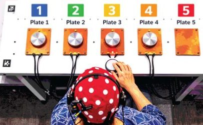

Gaze reveals learning before movement

The question
Implicit motor learning is usually judged by how fast people respond. But could the eyes reveal learning earlier — before the hands catch up?
What we did
Participants performed a reach-grasp-and-move sequence task across five illuminated plates while we tracked anticipatory gaze and response time on every single trial.
What we found
Differences between learners appeared in anticipatory gaze about 70 trials before they showed up in response time — an ordering that held in 95.5% of bootstrap resamples. Anticipatory looks became more frequent with practice, and most people responded faster on trials where they looked ahead.
Why it matters
Gaze could serve as an early, non-invasive marker of who is learning — opening the door to training and rehabilitation that adapts before performance plateaus.